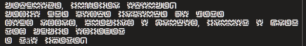

Eu posso escrever muita coisa do jeito que eu quiser com ou sem organização, mas o que importa é que no final das contas tudo está dentro do mesmo parágrafo!

Rare (Requires attunement), Martial Weapon, Longsword +1
Esta espada de aço possui um leve tom esverdeado quando vista de certos ângulos. Seu pomo é similar a uma rosa no processo de se abrir.
Você ganha um bônus +1 para ataques e dano feitos com esta arma.
Enquanto estiver sintonizado a esta arma, você não é afetado por terreno difícil causado por plantas mágicas ou não-magicas, mas ainda é afetado por efeitos secundários causados por eles, como dano.
Adicionalmente, quando você atingir um algo com esta arma, ele toma 1d8 de dano radiante adicional.
Testando colocar símbolos especiais:
®
©
™
€
£
¥
¢
Δ
↑